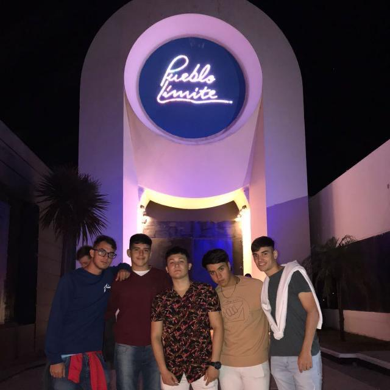

PREMIOS A LOS EVENTOS MÁS IMPORTANTES DEL AÑO DENTRO DE LOS PAPUS

GRUPO DE QUEBRADOS
Los Papus Awards llegaron para quedarse.
El evento que celebra la calidad, virtud y decepciones del grupo conocido como "LOS PAPUS".
En este lindo grupete vas a encontrar de todo. Desde Lopez chupando una corona como si fuera una
pija hasta Gonza
"cambiando" una rueda en la YPF. Támbien, podes encontrar a Nehemi durmiendo en cualquier lado o
borracho al punto de comer un pancho que se le cayó en la arena. Hay otros que támbien se la pasan
durmiendo como Juancho y Lucho.